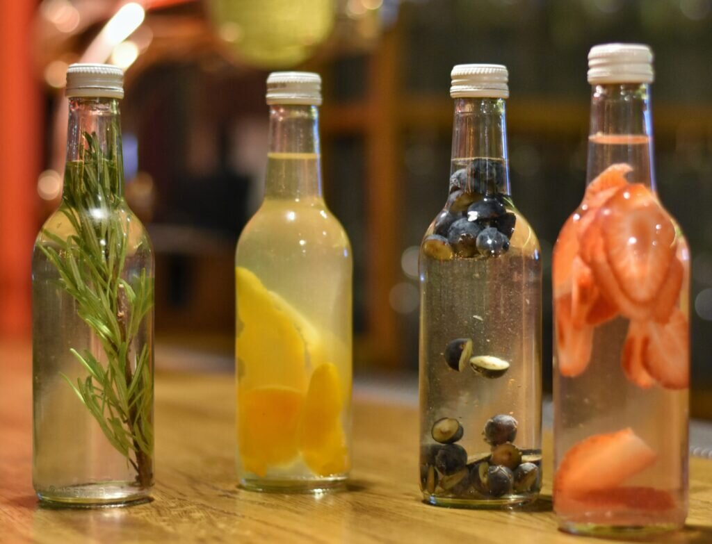

VASARA
Ko es dariju vasarā!
Saksim ar pašu pirmo, es stradāju "Darznieks Z/S kliģēni", Spēlēju basketbolu brivajā laikā.
Pa mazam laiciņam ari programmēju, bet neko lielu nebiju darijis, jo neko neacerejos lai vispār kaut ko izdaītu

Kur es piedalijos!
Es piedalijos "Sunny Streetball" ar savu komandu kā sauc "Šļakatas".
"Šļakatas" ir tikusas 12.vieta no 25.komandām un esam tikuši līdz finālam, kas notiks 16.septembrī, jācer ir kad tiksim lidz 4.vietai no 15. komandam.
Es arī piedalijos dzeršanas spelē pēc basketbola spēlem, nav baigi veselīgi "But it izz what it izz".
Darbs "Dārznieks z/s Ķliģēni"!
Es sāku stradāt Dārzniekā maija beigas un nostradāju līdz 11.augustam, bija ļoti intresants darbs tas ir viens no labākajiem darbiem kur strādat vasarā.
Iepazinu daudz jaunus cilvēkus īpaši vienu kolēgi ar ko esmu draugos Rorigo, ahujens fujaks laba humor izjūta viņam ir.....
Labākais ir tas kad nemaksa stunda, bet pa izdarīto!!